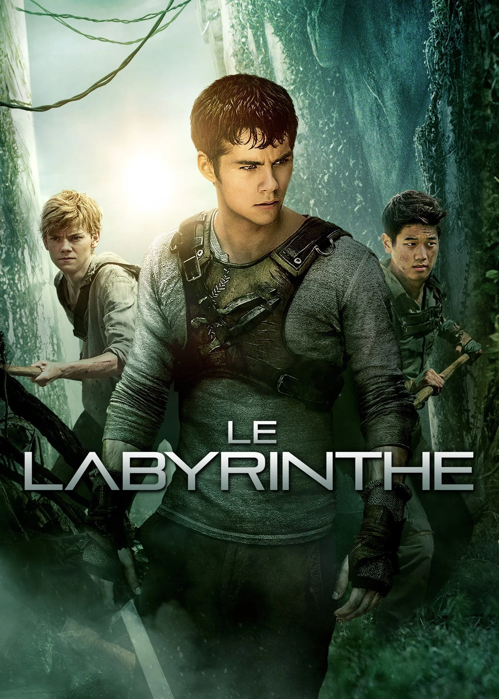

Films et séries
Pendant mon temps libre, j'aime regarder des films et des séries, principalement de genre policier, horreur, et criminel. J'apprécie aussi les comédies et les histoires romantiques, qui apportent une touche d'humour et de légèreté.
-
Murder
SérieUn groupe d'étudiants en droit et leur professeure se retrouvent impliqués dans des meurtres, mêlant secrets et manipulations.
-
Grey's Anatomy
SérieLa vie des chirurgiens à l'hôpital Grey Sloan entre urgences médicales, drames personnels et histoires d'amour.
-
Babylon
FilmHollywood des années 1920 : ascension et chute de stars dans un monde de débauche et de changements cinématographiques.
-
The Greatest Showman
FilmL'histoire de P.T. Barnum, créateur de cirque, qui défie les normes et célèbre la diversité à travers des spectacles.
-
Dune
FilmPaul Atreides, lié à la planète Arrakis, découvre ses pouvoirs et lutte pour survivre alors que des factions galactiques se disputent une ressource précieuse.
-
The Esther
FilmUne jeune fille adoptée cache un secret terrifiant, menaçant sa nouvelle famille. Un thriller psychologique qui explore les thèmes de l'horreur et du suspense.
-
La Fracture
FilmUn homme cherche sa femme et sa fille disparues dans un hôpital, sombrant dans une paranoïa où réalité et hallucination se confondent.
-
Hunger Game
FilmDans un futur dystopique, Katniss Everdeen participe aux Hunger Games, un jeu télévisé où des adolescents s’affrontent à mort, mettant en scène la résistance contre l’injustice.
-
Insidious
FilmUne famille découvre des phénomènes paranormaux dans leur nouvelle maison et réalise que leur fils est une passerelle vers un monde spectral effrayant.
-

Labyrinthe
FilmUn groupe de jeunes se réveille dans un labyrinthe géant et dangereux sans souvenirs de leur passé, cherchant désespérément une issue.
-
The Rookie
SérieÀ 40 ans, John Nolan rejoint la police de Los Angeles comme le plus vieux recrue, défiant les préjugés et prouvant sa valeur malgré les difficultés de sa nouvelle carrière.
-
Pretty Little Liars
SérieAprès la disparition de leur amie Alison, quatre adolescentes reçoivent des messages menaçants de "A", une mystérieuse figure qui connait tous leurs secrets.
-
Elle s'appelait Sarah
FilmLe film suit une journaliste qui enquête sur l'histoire d'une jeune fille juive, Sarah, dont la famille a été déportée. Elle découvre un secret douloureux liant le passé et le présent.
-
Sweet Tooth
SérieDans un monde post-apocalyptique où des hybrides mi-humains mi-animaux apparaissent, un jeune garçon à moitié cerf, Gus, entreprend un voyage pour retrouver sa mère.
-
Bullet Train
FilmCinq assassins se retrouvent à bord d'un train à grande vitesse au Japon, chacun avec une mission différente qui semble interconnectée.
-
The Visit
FilmDeux enfants visitent leurs grands-parents inconnus et découvrent des comportements de plus en plus étranges.
-
The Manifest
SérieAprès le vol 828, un avion disparu depuis cinq ans refait surface sans que les passagers n'aient vieilli d'un jour. Les passagers doivent comprendre ce qui leur est arrivé.
-
One Piece
SérieLuffy et son équipage se lance dans une nouvelle aventure à la recherche d'un trésor légendaire. En chemin, ils affrontent de puissants ennemis et découvrent des alliés.
-
Bridgerton
SérieLa haute société londonienne est pleine de romances et scandales, narrés par la mystérieuse Lady Whistledown.
-
Family Business
SérieUne famille française décide de convertir sa boucherie casher en "beucherie", un coffee shop de cannabis, après la légalisation prévue du cannabis en France.
-
Only murder in the building
SérieTrois voisins passionnés de true-crime enquêtent sur un meurtre dans leur immeuble et lancent un podcast pour suivre leur enquête.